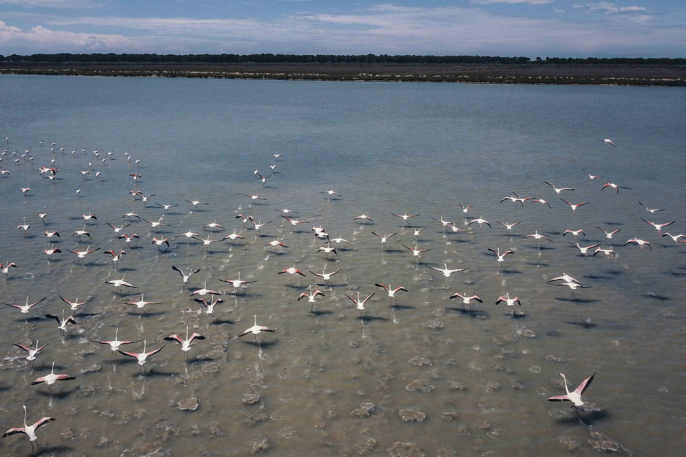
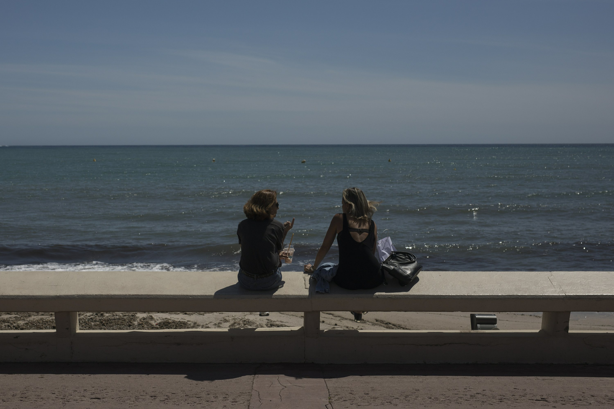
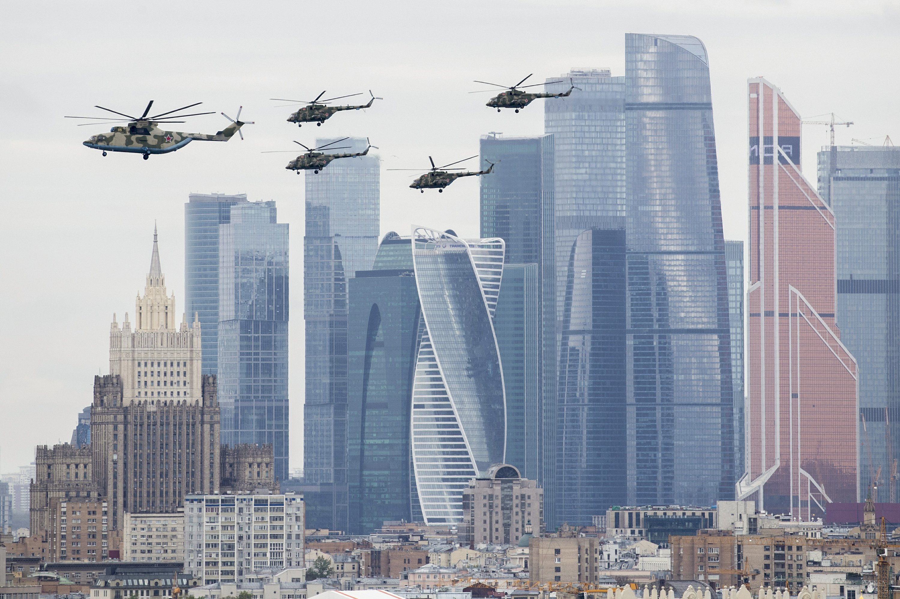

Content
(1) This composite image made available by NASA shows a neutron star, center, left behind by the explosion from the original star's death in the constellation Taurus, observed on Earth as the supernova of A.D. 1054. This image uses data from three of NASA's observatories: the Chandra X-ray image is shown in blue, the Hubble Space Telescope optical image is in red and yellow, and the Spitzer Space Telescope's infrared image is in purple. After nearly two decades in Earth orbit, scanning the universe with infrared eyes, ground controllers plan to put the faltering Spitzer Space Telescope into permanent hibernation on Thursday, Jan. 29, 2020. (X-Ray: NASA CXC J.Hester (ASU); Optical: NASA ESA J.Hester & A.Loll (ASU); Infrared: NASA JPL-Caltech R.Gehrz (Univ. Minn.))
(2) FILE - In this Feb. 20, 2019, file photo, fog covers the El Capitan landmark in Yosemite National Park, Calif. An estimated 90 shuttle bus drivers and Yosemite National Park transportation workers who were laid off after the park closed to visitors in March are now facing eviction. The group of Yosemite Hospitality workers were told this week layoffs require them to leave Yosemite by May 21, the Fresno Bee reported Friday, May 8, 2020. (Marcio Jose Sanchez, File)

(3) Flamingos fly in Narta Lagoon, about 140 kilometers (90 miles) southwest of the Albanian capital of Tirana, May 2, 2020. Home confinement rules have angered and anguished some people in Albania, but humans getting their wings clipped during the coronavirus pandemic is allowing flamingos and other birds to flourish in a coastal lagoon by the Adriatic Sea. (Hektor Pustina)

(4) Two women sit above the deserted Croisette beach due to measures put in place to stop the spread of the coronavirus in Cannes, southern France, Tuesday, May 12, 2020. The Cannes Film Festival won't kick off as planned on Tuesday. The festival's 73rd edition has been postponed indefinitely, part of the worldwide shutdowns meant to stop the spread of the coronavirus. (Daniel Cole)

(5) Russian military helicopters fly over Moscow's City skyscrapers and empty streets to mark the 75th anniversary of the Nazi defeat in World War II in Moscow, Russia, Saturday, May 9, 2020. A massive Victory Day parade on Red Square was cancelled due to the coronavirus outbreak, but Russia marked the holiday with the flyby. (Denis Tyrin)
(6) Russia's Darya Klishina makes an attempt in the women's long jump final during the World Athletics Championships in London Friday, Aug. 11, 2017. (Matt Dunham)
Posted on 2020-05-15 22:01:12